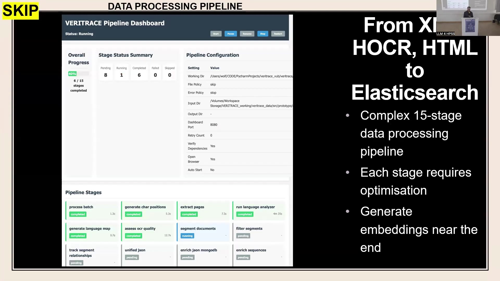

6 Computational HPSS: Tracing Ancient Wisdom’s Influence with VERITRACE
6.1 Overview
The VERITRACE project (2023-2028), an ERC Starting Grant initiative (101076836) at Vrije Universiteit Brussel (VUB) and accessible via HTTPS://VERITRACE.EU, aims to trace the influence of the early modern ‘ancient wisdom’ or Prisca Sapientia tradition on the development of natural philosophy and science. This tradition is found in texts such as the Chaldean Oracles, Sibylline Oracles, Orphic Hymns, and the Corpus Hermeticum.
The project involves large-scale multilingual exploration of approximately 430,000 printed texts published between 1540 and 1728. These texts are sourced from Early English Books Online (EEBO), Gallica (French National Library), and the Bavarian State Library, covering at least six languages.
VERITRACE employs computational History, Philosophy, and Sociology of Science (HPSS) methods, including keyword search and textual reuse detection (both lexical and semantic). This approach functions similarly to an “early modern plagiarism detector” and seeks to uncover previously ignored networks of texts, passages, themes, topics, authors, and new patterns in intellectual history.
Core challenges for the project include variable Optical Character Recognition (OCR) quality from raw library-provided texts (in XML, HOCR, HTML formats) without ground truth page images. Further complexities arise from early modern typography and semantics across multiple languages, alongside the sheer volume of data.
Large Language Models (LLMs) are utilized in two main capacities:
GPT-based LLMs function as ‘LLMs-as-Judges’ for enriching and cleaning metadata. This involves matching VERITRACE records with high-quality metadata from the Universal Short Title Catalogue (USTC). This approach, utilizing a panel of LLMs (Primary, Secondary, Tiebreaker, Expert), currently faces challenges with hallucinations when using open-source models like Llama.
BERT-based LLMs, specifically Language-agnostic BERT Sentence Embeddings (LaBSE), are used for generating vector embeddings. These embeddings encode semantic meaning for text matching and are implemented within the VERITRACE web application.
A 15-stage data processing pipeline prepares the textual data, which is then indexed in an Elasticsearch backend. The alpha-stage VERITRACE web application, currently hosted locally and not publicly available, includes several modules:
The Explore module provides corpus statistics (e.g., language distribution, documents by decade, sourced from MongoDB) and allows detailed metadata viewing. This includes features for multilingual content identification within texts and experimental page-by-page OCR quality assessment.
The Search module, powered by Elasticsearch, enables keyword-based searches with support for complex queries (AND, OR, nested) and proximity queries.
The Analyse module is planned to include tools for topic modeling, Latent Semantic Analysis (LSA), and diachronic analysis.
The Read module integrates a Mirador viewer for accessing digital facsimiles (PDFs) of the historical texts alongside their metadata.
The Match module is designed to find textual similarities. It supports lexical (keyword-based), semantic (vector embedding-based), and hybrid matching techniques. Users can customize parameters and select matching modes (Standard, Comprehensive).
A case study involving matching Newton’s Latin Optice (1719) and English Opticks (1718) demonstrated the Match module’s capabilities. Lexical matching, in standard mode, correctly found no significant cross-language matches. Semantic matching using LaBSE produced conceptually reasonable matches (e.g., similarity scores of 90-92%) but revealed issues with coverage scores and the overall adequacy of the LaBSE model. This inadequacy is potentially due to out-of-domain model collapse when processing historical, multilingual, and OCR-affected text.
Future work will address challenges such as selecting or fine-tuning more suitable multilingual embedding models (alternatives include XLM-Roberta, intfloat/multilingual-e5-large, historical mBERT). Other challenges include managing semantic change over time in historical texts, mitigating the impact of poor OCR quality (through selective re-OCR or sourcing higher-quality text versions), and ensuring the scalability and performance of the system for the full corpus of 430,000 texts.
6.2 Project Foundation and Objectives

The VERITRACE project, subtitled “Traces de la Verité,” is a five-year initiative funded by an European Research Council (ERC) Starting Grant (No. 101076836), running from 2023 to 2028. The project is based at the Vrije Universiteit Brussel (VUB) under the leadership of Principal Investigator (PI) Prof. Dr. Cornelis J. Schilt.
The research team comprises five members: the PI, Dr. Eszter Kovács (a classicist), Dr. Jeffrey Wolf (a historian of science and medicine, serving as the digital humanities lead for this project), Niccolò Cantoni (a historian), and Demetrios Paraschos (a historian). While the team is primarily based in Brussels, Dr. Wolf operates from Berlin. The project’s official website is HTTPS://VERITRACE.EU.
The central research objective of VERITRACE is to trace the influence of what is termed an early modern ‘ancient wisdom’ or Prisca Sapientia tradition on the development of natural philosophy and science during the early modern period. This tradition is found in a range of texts, including the Chaldean Oracles, the Sibylline Oracles, the Orphic Hymns, and the Corpus Hermeticum, the last of which is particularly noted for its relevance to the history of chemistry. A core collection of 140 works has been identified as representing this ‘ancient wisdom’ tradition, forming a close reading corpus for the project.
While some connections between prominent scientific figures and these texts are known—for instance, Isaac Newton’s engagement with the Sibylline Oracles and Johannes Kepler’s familiarity with the Corpus Hermeticum—VERITRACE aims to delve deeper. The project seeks to uncover a much broader network of texts and authors who engaged with this tradition, many of whom may be lesser-known and constitute what one scholar has termed the ‘great Unread.’ Dr. Wolf, whose primary historical research focuses on the 18th century (a period that begins as the VERITRACE project’s timeline concludes), is responsible for the digital humanities components of this endeavor.
6.3 Computational HPSS Framework

The VERITRACE project adopts a Computational History, Philosophy, and Sociology of Science (HPSS) framework to address its research questions. The core methodology involves large-scale multilingual exploration of its textual corpus. This exploration is facilitated by several computational tools and techniques.
Keyword search capabilities allow for targeted queries within the dataset. A significant focus is placed on identifying textual reuse across the corpus. This includes detecting both direct (lexical) reuse, such as explicit quotations (whether cited or not), and indirect (semantic) reuse, which encompasses paraphrases or subtle allusions that contemporary readers would have recognized (for example, an indirect reference to the Corpus Hermeticum).
Given the very large and multilingual nature of the corpus, these tools are designed to operate effectively across diverse linguistic and textual materials. The project aims, in effect, to build an “Early Modern Plagiarism Detector.” The primary objective of this computational approach is to uncover networks of texts, passages, themes, topics, and authors that may have been overlooked by traditional historical methods. A secondary objective is the potential discovery of new patterns and insights within the intellectual history and philosophy of science.
6.4 Data Set: Composition and Sources

The VERITRACE project utilizes a large, diverse, and multilingual data set composed exclusively of digital texts derived from printed works; handwritten materials are intentionally excluded from its scope. The chronological span of the corpus covers approximately 200 years, beginning in 1540 (a starting point chosen for various, though unspecified, reasons) and concluding in 1728, a date selected because it is shortly after the death of Isaac Newton. The texts within the corpus are in at least six different languages.
The data is aggregated from three primary multilingual sources:
Early English Books Online (EEBO), which is noted as being freely downloadable.
Gallica, the digital library of the French National Library, from which sources have been downloaded.
The Bavarian State Library, which constitutes the largest single data source for the project.
In total, these sources contribute to a corpus of approximately 430,000 texts. The project plans to employ a range of state-of-the-art digital techniques for analysis, including Keyword Search, Text Matching, Topic Modelling, and Sentiment Analysis, among others.
6.5 Challenges and LLM Strategy

The VERITRACE project confronts several core challenges inherent in working with large historical textual datasets. A primary issue is the variable quality of Optical Character Recognition (OCR) in the texts, which are supplied by libraries in raw digital formats such as XML, HOCR, or even HTML files. Critically, these raw texts are provided without corresponding ground truth page images, making OCR error correction difficult and impacting all subsequent data processing stages.
A second significant challenge lies in handling early modern typography and semantics across at least six different languages, each with its own historical linguistic complexities. Thirdly, the sheer scale of the data—hundreds of thousands of texts printed across Europe over a span of roughly 200 years—presents substantial data management and processing hurdles.
To address some of these challenges, particularly in text analysis, the project employs Large Language Models (LLMs) in two distinct roles. On the “decoder-side,” GPT-based LLMs are utilized to help enrich and clean the metadata associated with the texts. This involves a methodology referred to as “LLMs-as-Judges.” While this application is part of the project, it is not the primary focus of this particular presentation. The presentation concentrates on the “encoder-side” application of LLMs, where BERT-based models are used to generate embeddings. These embeddings aim to encode the semantic meaning of sentences and passages (defined as short groups of sentences) within the textual corpus, primarily to facilitate text matching tasks.
6.6 Metadata Enrichment with LLMs-as-Judges

A specific application of LLMs within the VERITRACE project, though not detailed extensively in this presentation, involves their use as “LLMs-as-Judges” for metadata enrichment. The primary motivation for this sub-project is to improve the quality of VERITRACE’s metadata by mapping its records to corresponding entries in the Universal Short Title Catalogue (USTC), a recognized high-quality metadata source available at https://www.ustc.ac.uk.
Successfully matched records result in “enriched” VERITRACE metadata that is less likely to require extensive manual cleaning. The challenge stems from the fact that while some record mapping can be automated using external identifiers, a majority of records cannot be matched this way, especially since the initial VERITRACE metadata is uncleaned. The alternative, manual comparison of bibliographic details for tens of thousands of record pairs (with each team member initially assigned 10,000 such pairs), is an extremely tedious task.
To automate this, the project is developing an “LLM Bench,” a panel of multiple LLMs, to evaluate whether a given pair of bibliographic records—one from a low-quality source (VERITRACE) and one from a high-quality source (USTC)—represent the same underlying printed text. This bench is configured with a Primary LLM, a Secondary LLM, a Tiebreaker LLM, and an Expert LLM for handling difficult edge cases.
The process requires these LLMs not only to judge whether a match exists but also to provide detailed reasoning for their decisions and a confidence level for each judgment. These LLM-generated assessments are then compared against ground truth data, with the VERITRACE team conducting a final review. This system relies on extensive prompt guidelines to direct the LLMs regarding matching criteria and the desired output format, which includes fields like the ground truth status, the LLM’s final decision, a confidence score (e.g., “HIGH (87.7%)”), the decisions of individual models in the bench, key factors considered (such as title similarity, author match, date match, and place match), and a narrative reasoning.
Currently, this LLM-as-Judges system is a work in progress and is not yet fully functional. A major challenge encountered is the occurrence of hallucinations in the LLM output, where the models (primarily open-source models like Llama, not frontier models) generate information about records that were not part of the input. Attempts to mitigate these hallucinations by requesting more structured output have had mixed results; while structured output can reduce hallucinations, it often leads to the LLMs providing more generic and less helpful responses, especially in their reasoning. The process of finding the optimal balance in prompting and model configuration is described as being “more art than science.” Despite these ongoing challenges, the potential for this system to save significant time is considered substantial, and the project remains open to advice on improving this aspect.
6.7 Web Application and Data Infrastructure

The VERITRACE project is developing a web application to provide access to its data and analytical tools. This application is currently in an alpha version and is described as extremely new, to the extent that it had not yet been shared with the full project team prior to this presentation. It is not publicly available and runs on the presenter’s local computer. The demonstration of this application is intended more as a “promise of what we want to do” rather than a showcase of a finished product.
For semantic analysis within this application, the project is currently testing a BERT-based Large Language Model, specifically LaBSE (Language-agnostic BERT Sentence Embeddings). This model is used to generate vector embeddings intended to represent every passage within the corpus texts. However, a preliminary assessment suggests that LaBSE is “probably not good enough” for the project’s ultimate requirements, even though it demonstrates functionality in some instances.
Underpinning the web application is a substantial data processing pipeline. This pipeline takes raw text files provided by libraries in formats such as XML, HOCR, and HTML, and processes them for storage and indexing in an Elasticsearch database, which serves as the backend for the website. The pipeline is complex, consisting of 15 distinct stages. Examples of these stages include extracting text into plain text files, generating mappings of all character positions, segmenting the text into meaningful units, and assessing OCR quality. Each of these stages requires careful optimization. The generation of vector embeddings using models like LaBSE occurs towards the end of this multi-stage pipeline, after the initial text processing and cleaning steps.
6.8 Explore Module: Corpus Overview

The VERITRACE web application is structured into approximately five main sections: Explore, Search, Match, Analyse, and Read. The “Explore” section is designed to offer users an overview of the corpus through various statistics and to enable detailed inspection of the metadata associated with the texts.
For corpus-level statistics, this section draws data from a MongoDB database. At the time of presentation, the system contained 427,395 metadata records. These statistics are visualized through several charts, including:
A pie chart for Language Distribution.
A pie chart showing Documents by Data Source.
A bar chart illustrating Documents by Decade.
A bar chart depicting Publication Places.
Within the Explore section, an “Elasticsearch Metadata Explorer” provides functionality for users to browse sample records and examine the rich metadata compiled or generated for each text. Two features are particularly highlighted. First, detailed “Language Information” is provided for each document. This is derived from a language identification process run on every text, capable of analyzing segments as small as approximately 50 characters. This granular approach is crucial for accurately capturing the linguistic makeup of multilingual texts, which might be inadequately described by basic bibliographic metadata (e.g., a book simply labeled “Latin” might contain significant portions in Greek). An example given is a text identified as being 15% Greek and 85% Latin, which can then be classified as “substantively multilingual.”
Second, the system attempts an “OCR Quality Assessment.” This is a challenging task as it is performed on the raw text without access to ground truth page images. The assessment aims for page-by-page granularity, rather than assigning a single quality score to an entire book. This feature is acknowledged as difficult and experimental. Other metadata fields available for inspection include Document ID, Filename, File Path, Bibliographic Title, Author, Printer, Publication Place, Date, Format, Subject, comprehensive Language Information (including details on multilingual content, secondary languages and confidence scores, and detailed language distribution percentages), OCR Information (including a quality distribution chart), and Document Statistics (such as number of pages, segments, and character length).
6.9 Search Module Functionality

The “Search” section of the VERITRACE web application is anticipated to be a primary entry point for scholarly users, offering standard keyword search functionalities. This module is powered by an Elasticsearch backend. The version demonstrated during the presentation operates on a prototype corpus comprising 132 files, which represent a small fraction of the total 430,000+ texts. Even for this subset, the index contains 16,991,177 segments and occupies 15.37 GB of storage. It is projected that the index for the full corpus will scale into the terabyte range.
The search module supports a variety of query types. Users can perform basic keyword searches; for example, a search for “hermes” within the prototype corpus returned 22 documents with a total of 332 matches. More advanced fielded queries allow users to target specific metadata fields, such as searching for “author:kepler ‘hermes’,” which in the prototype identified one document with two matches.
The system also handles complex queries incorporating Boolean operators (AND, OR) and nested query structures. Furthermore, proximity queries are supported, enabling users to find texts where specified terms appear within a certain word distance of each other, for instance, locating instances where “Hermes” and “Plato” are mentioned within 10 words of one another. The search results are displayed in a table format, providing details such as Filename, Title, Author, Date, Language, a relevance score, the number of segments with hits in the document, and the total number of matches for the query terms. The basic search functionalities are reported to be already operational.
6.10 Analyse (Planned) and Read Modules

The VERITRACE web application includes an “Analyse” section, which is currently planned and not yet implemented. This section is intended to house various advanced analytical tools. The planned features include:
Topic Modeling capabilities.
Latent Semantic Analysis (LSA).
Tools for Diachronic Analysis, with the acknowledgment that methods for this are being actively learned and considered, partly based on input from workshop attendees.
In contrast, the “Read” section of the application is already implemented. Its purpose is to provide scholars with the ability to view digital facsimiles of the historical texts within the corpus. This is achieved by offering access to PDF versions of every text. An integrated Mirador viewer is used to display these documents, aiming for a user experience comparable to reading texts on a standard library website. Alongside the document image, users can also access relevant metadata for the text being viewed. The interface for this section shows an image of a historical document page, accompanied by document information fields such as Source Document, Citation, Preferred title of work, Creator, and Title.
6.11 Match Module: Textual Similarity
The “Match” section of the VERITRACE web application is dedicated to identifying textual reuse and similarities between documents, primarily leveraging vector embeddings. Users can input a “Query Text” and a “Comparison Text” through designated text areas. The module supports various matching scopes: users can compare a single document against another single document, perform multi-document comparisons (for instance, comparing Newton’s Latin Opticks against all of Kepler’s works available in the database), or attempt a corpus-wide match, where one text is compared against the entire VERITRACE corpus. This last option is acknowledged as computationally intensive, with potential challenges in delivering results within an acceptable timeframe for users.
A “Matching Options Panel” allows users to customize the matching process by adjusting various parameters. The design philosophy is to expose these parameters, such as the minimum similarity score threshold, so that advanced users can fine-tune the search, although default settings will also be available. The module offers three primary match types:
Lexical Matching: This method relies on keyword matching and is effective when texts share similar vocabulary.
Semantic Matching: This approach uses vector embeddings to identify conceptually similar passages. It is designed to function across different languages and can detect similarities that are not based on shared vocabulary (e.g., paraphrases).
Hybrid Matching: This combines both lexical and semantic techniques, potentially allowing users to assign different weights to each approach.
Additionally, different “Matching Modes” are available. A “Standard Mode” uses default settings. A “Comprehensive Mode” employs more computing power and may take longer to execute, but aims to find a more exhaustive set of matches. The existence of a comprehensive mode implies a faster, possibly more selective, mode for quicker analyses.
6.12 Case Study: Newton’s Opticks Matching

To test and illustrate the “Match” module’s capabilities, a case study involving two editions of Isaac Newton’s Opticks was conducted, serving as sanity checks. The query document was the Latin 1719 edition (Optice: sive de reflexionibus, refractionibus, inflexionibus et coloribus lucis…), and the comparison document was the English 1718 edition (Opticks: Or, A Treatise Of The Reflections, Refractions, Inflections and Colours Of Light).
The first sanity check involved a lexical match (keyword-based) between the Latin and English editions using the standard matching mode. As expected, due to the language difference, no significant matches were found. However, when using the “Comprehensive Mode,” three matches were identified; these were in English, suggesting that the Latin edition likely contains some English text, possibly in prefatory material.
To illustrate the output of a lexical match, an example of matching the English Opticks against itself was shown, yielding a normalized match score of 100%, a coverage score of 99.7%, and a quality score of 100.0%. The match details view for such a scenario provides side-by-side displays of source and comparison passages with highlighted terms and similarity scores (100% for identical passages). The summary also includes information like the number of comparisons performed (almost 1.3 million in one instance).
The second sanity check performed a semantic match between the Latin and English Opticks editions, using the LaBSE model for vector embeddings and the standard matching mode. The expectation was to find significant conceptual similarities, as one text is largely a translation of the other. The results indicated that the matches found “seem reasonable,” even with underlying OCR issues. For example, passages discussing colors in the Latin text were successfully aligned with corresponding passages about colors in the English text, with similarity scores in the example range of 90.35% to 91.77%.
The summary statistics for this semantic match showed a normalized match score of 58%, a coverage score of 36.9%, and a quality score of 91.2%. The quality score was deemed reasonable and high. The low coverage score was noted as requiring further investigation, though it was posited that this might partially reflect genuine textual differences, as the Latin edition is reportedly longer and potentially quite different from the English one. Despite some reasonable matches, other queries run with the LaBSE model have led to the assessment that it is generally “inadequate for the task.” The hypothesized reason for this inadequacy is an “out-of-domain model collapse,” where the model struggles with the historical language, typography, poor OCR quality, and mixed multilingual content of the VERITRACE corpus, which significantly deviates from its modern training data.
6.13 Future Challenges

Several significant challenges and open questions lie on the horizon for the VERITRACE project. A primary concern is the choice of an appropriate embedding model. While LaBSE was used as a starting point, it is likely insufficient for the project’s needs. Alternative pre-trained multilingual models such as XLM-Roberta, intfloat/multilingual-e5-large, or various historical mBERT models are being considered. However, all these models come with trade-offs concerning accuracy, storage footprint, and inference speed. An alternative strategy under consideration is whether it would be more effective to fine-tune a base embedding model specifically on the VERITRACE historical corpus, given its unique linguistic and material characteristics. This is posed as an open question about the viability of using off-the-shelf models versus the necessity of custom fine-tuning.
Another complex issue is handling semantic change over time. The project must grapple with how an embedding model can account for the evolution of word meanings and concepts across several centuries (e.g., comparing a text from 1540 with one from 1700) and across different languages, all while attempting to represent them within a unified vector space.
The persistent problem of poor OCR quality continues to be a major hurdle, as it adversely affects all downstream processing tasks, including fundamental steps like accurately segmenting text into sentences and passages. Re-OCRing the entire corpus of 430,000 texts is not a feasible solution due to resource constraints. Potential mitigation strategies include selectively re-OCRing only the texts identified as having very poor quality, or investing effort in locating and integrating existing, higher-quality digitized versions of these texts from other sources.
Finally, scaling and performance will become increasingly critical issues. Current queries on a small subset of 132 texts take approximately 15 seconds to complete. Extrapolating this to the full corpus of 430,000 texts raises significant challenges for maintaining acceptable query performance and overall system responsiveness. The project actively welcomes advice and input on addressing these multifaceted challenges.